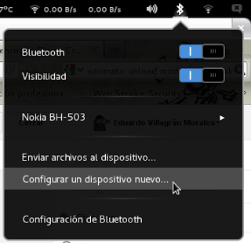
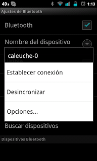

El escenario genérico podría ser el siguiente: tenemos un celular o reproductor de audio que soporta el perfil bluetooth A2DP y queremos enviar el audio hacia nuestro PC para usarlo como parlantes bluetooth.
{kind=link}
Lo primero que debemos hacer es contar con los paquetes adecuados:
- pulseaudio-module-bluetooth
- pavucontrol
Estos pueden ser instalados desde la aplicación Añadir/Quitar software o desde consola con:
yum install pulseaudio-module-bluetooth pavucontrol
Estos pasos sólo deben efectuarse la primera vez (como root):
- Luego debemos editar o crear el archivo /etc/bluetooth/audio.conf con el siguiente contenido:
[General]
Enable=Sink,Source
- Reiniciamos el servicio bluetooth
systemctl restart bluetooth.service
Estos pasos deberán ser efectuados como usuario normal (no root) cada vez que conectemos un dispositivo de audio vía A2DP:
- Cargar módulo bluetooth de PulseAudio:
pactl load-module module-bluetooth-discover
- Emparejar dispositivos, debemos usar el applet bluetooth:
 - Establecer conexión desde el celular, seleccionar el dispositivo (en este caso el PC) y damos en Establecer conexión:
 - Una vez establecida la conexión veremos el ícono bluetooth así:
- Buscar la fuente bluetooth:
{kind=link}
{kind=link}
{kind=link}
[test@test ~ ]$ pactl list short sources | grep bluez_source |awk '{print $2;}'
Obtendremos la fuente:
bluez_source.38_E7_D8_41_AE_63
- Buscamos la salida de audio del PC:
[test@test ~ ]$ pactl list short sinks | grep -v Monitor |grep alsa_output.pci | awk '{ print $2; }'
Obtendremos algunas salidas:
alsa_output.pci-0000_01_05.1.hdmi-stereo
alsa_output.pci-0000_00_14.2.analog-stereo
alsa_output.pci-0000_01_05.1.hdmi-stereo.monitor
alsa_output.pci-0000_00_14.2.analog-stereo.monitor
- Creamos un flujo desde el bluetooth hacia la salida de audio del PC:
[test@test ~ ]$ pactl load-module module-loopback source=bluez_source.38_E7_D8_41_AE_63 sink=alsa_output.pci-0000_00_14.2.analog-stereo
XX
En este caso, el número XX correspondería al ID del flujo que estoy enviando el audio hacia los parlantes (alsa_output.pci-0000_00_14.2.analog-stereo), si quisiera enviar la salida hacia la salida HDMI debería usar alsa_output.pci-0000_01_05.1.hdmi-stereo. 8. Comenzamos a reproducir el audio desde el celular. 9. Antes de desconectar el bluetooth debemos eliminar el flujo de lo contrario comenzará a alimentarse desde micrófono y finalmente se acoplará.
pactl unload-module XX
donde XX es el ID que nos dio al crear el flujo.
En caso que no escuchemos el audio, se debe abrir pavucontrol:
- En la pestaña Reproducción seleccionar Mostrar: Flujos virtuales
- Quitar el silencio (ícono de parlante con una X).